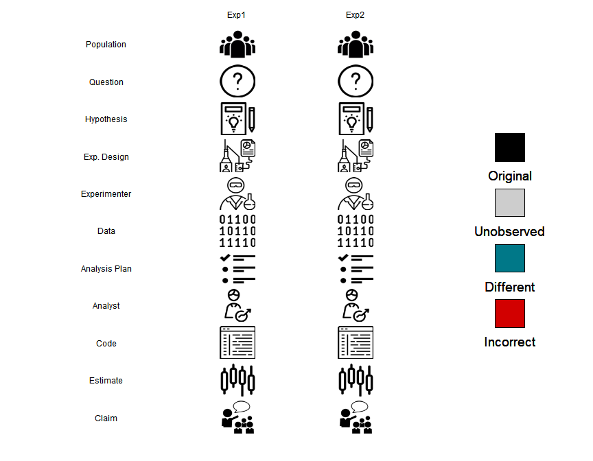

# move values above/below quantiles to those quantiles
winsorize<-function(vec,q=0.006){
lohi<-quantile(vec,c(q,1-q),na.rm=TRUE)
if(diff(lohi)<0)lohi<-rev(lohi)
vec[!is.na(vec)&vec<lohi[1]]<-lohi[1]
vec[!is.na(vec)&vec>lohi[2]]<-lohi[2]
vec}Crash course on reproducible computing in R
Overview
Today, we cover:
Course overview
Basic principles of reproducible computing
- Coding style
- Using the command line
- Project organization
- Coding style
Lab with practice questions, if time allows
How many of you have taken David Benkeser’s data science class? Some of this comes from his class, and I like his tone so I will keep it.
About me
Research
- Functional data analysis
- Spatial proteomics
- Application areas: cannabis impairment, wearables/sensor data, ovarian cancer
I think this is the most fun you can have doing statistics. What about you? What research are you doing? Course is supposed to give you tools to help with your research!
Announcements
- Discussion board post due tomorrow (1/15) at 10:00AM
- Homework 1 due Wednesday, 1/21 at 10:00AM
Course objectives
My goal for this course is for you to learn practical skills you need to become a statistical methods researcher. There are two main areas we will focus on:
- Computing
- R focused
- R focused
- Algorithms
- Look under the hood at algorithms for commonly used methods like logistic regression, LASSO, mixed effects models
There is a new course website where all materials (other than HW) will be shared.
Units will go back and forth between these things.
My teaching philosophy
- Ask questions early and often
- It helps you stay engaged and others are likely to benefit from your question as well
- What you learn is proportional to the effort you put in
- Try to think about this less as a class where you try to get a grade and more as a place where you are learning the skills to be a good researcher and help you write a great dissertation
- Use ChatGPT, but wisely
- Feel free to work together
These concepts can be super fun to learn
Emails vs. Discussion board
Discussion board
- All questions about course content should go on the discussion board!
- This includes homework questions
- This allows all students to benefit from questions asked about course content
- Posting and answering questions posted on the discussion board will count towards your participation grade
Emails
- Email should only be used for schedule purposes and personal matters
Office hours and homework due dates
Office hours
- Tuesdays at 11:00AM (Weijia)
- Thursdays at 1:00PM (Me)
Homework policies
- Homeworks will be due on Wednesdays at 10am
- Late assignments will receive a maximum of half credit. Assignments more than 3 days late will not be accepted.
- Let me know (if possible, in advance) if you have known conflicts with the due dates or a special circumstance (conference travel, family emergency)
I may be flexible about the due dates since the course is new
Grading
- Homework (50%)
- 6-7 assignments
- Discussion board posts (10%)
- 4-5 posts
- Participation (10%)
- Participation can mean asking questions in class, posting on the discussion board, or attending office hours
- To quantify, 5+ posts on discussion board besides official posts
- I encourage you to post computing tricks, cool algorithms, etc
- Final project (30%)
- Related to your research, if possible
Syllabus
- Course content will be hosted on Course Website
- Homework will be posted on Canvas
- Any other questions?
Coding style
Principles for scientific coding
In this order:
- Code that works.
- Code that is reproducible.
- Code that is readable.
- Code that is generalizable.
- Code that is efficient.
A minimal standard for scientific computing is 1-3.
Advice for beginner coders
It’s OK to copy/paste code from ChatGPT or Stack Overflow, but make sure you understand how it works.
- Run line by line and see what each does.
- Change the code and see if it behaves as expected.
Stakes for copy/paste can be high!
- Incorrect analyses.
- Expensive (inadvertent) cloud computing.
For high stakes analyses, ask a colleague for a code review.
Advice for more advanced coders
Getting code AND is most important.
- Make your code more efficient later.
- After a paper is submitted for review?
Remember: you don’t get bonus points for code that “looks impressive”.
Think before you code
Before you start writing code, think about what you want the code to do.
Plain English → pseudo-code → actual code
This careful thought process can ultimately lead to more efficient and more robust code development.
Don’t repeat yourself
Don’t repeat yourself (DRY) is a fundamental concept in programming.
- Ruthlessly eliminate duplication, Wilson et al
For example, variables score1=1, score2=2, score3=3 → score=list(1,2,3).
If you write the same code more than once, it should be a function.
- Break large tasks into smaller calls to functions.
- Give functions (everything, really) meaningful names.
- self-documenting code
It is highly inefficient and dangerous to copy and paste multiple chunks of code. * What if you need to change 1 thing? Needs to be changed in multiple places. Risk getting a wrong answer because we forgot to change one small thing.
Meaningful names make reading code much easier. It’s OK to make names long and informative. Most (good) text editors will have tab completion so that it won’t slow you down typing (once you’re used to using it).
Functions in R
If you don’t know how functions work in R, .
- Software carpentry: Creating R Functions
- R for Data Science: Functions
- DataCamp: A Tutorial on Using Functions in R!
I’m not planning to cover this… but it’s super important! Learn it if you don’t know it already.
Generalize… some
Write code a bit more general than your data or specific task.
- Don’t assume particular dimensions.
- Don’t forget about missing values (even if your data have none).
But
- Try to anticipate what you might be asked for, but don’t prepare for every possibility.
- If you think of extreme cases where code breaks, document them.
Do you hear your collaborators making an arbitrary decision in the analysis plan? Prepare for that decision to change. - especially when it comes to which variables you want to put in the model!!
Generalize… some
Use function arguments to handle different cases.
- Don’t assume particular file names.
- Don’t assume particular tuning parameters.
- Don’t assume particular regression formulas.
How general to make your code depends on its purpose!!
Least general: analyze a specific dataset Most general: R package implementing a new method
No magic numbers
There are many decision points in an analysis. Give them a name!
- How many bootstrap samples?
nboot = 1e3
- What tolerance for convergence of an algorithm?
tol_covergence = 1e-3
- What threshold for excluding missing data?
tol_missingness = 3
No magic numbers
Even better, include them as an argument to a function (with default values and documentation, as needed)!
get_bootstrap_ci <- function(..., nboot = 1e3)my_algorithm <- function(..., tol_convergence = 1e-3)
The variable name should roughly tell you what the number represents!
Other guidelines
Indent!
- 2 or 4 spaces (join the debate)
- Tabs can get nasty across systems.
Use white space!
- After commas, operators
- after headers in Rmarkdown (following
#)
Use
{}and()to avoid ambiguity.Keep lines short!
- Rule of thumb is 72 or 80 characters.
- Most text editors have settings to help with this.
A pet peeve of mine is when people don’t use enough white space in Rmd. I have a lot of visual pet peeves, it turns out.
Other guidelines
Bad!
Better!
# move values above/below quantiles to those quantiles
winsorize <- function(vec, q = 0.006){
lohi <- quantile(vec, c(q, 1 - q), na.rm = TRUE)
if(diff(lohi) < 0){
lohi <- rev(lohi)
}
vec[ !is.na(vec) & (vec < lohi[1]) ] <- lohi[1]
vec[ !is.na(vec) & (vec > lohi[2]) ] <- lohi[2]
return(vec)
}The parenthesis around vec < lohi[1] are probably unnecessary, but want to illustrate the point. Which function looks better?
Naming objects
Give objects informative names:
- Names should be:
- most importantly, descriptive
- as concise as possible while still being descriptive
- Avoid
tmp1,tmp2, …- …as
tmpting as it may be.
- …as
- Functions as verbs, objects as nouns
Please don’t look too closely at my R packages. You may learn what a hypocrite I am.
Naming objects
Have consistency in your naming systems:
- E.g.,
markersvs.mnames;nftvs.n_ft
Commit to a case:
camelCasevs.pothole_case
Don’t confuse yourself:
totalvs.totalsresultvs.rsltXvs.xzvs.zz
Underscores should be preferred as separator when coding in R (as opposed to .).
I use pothole case, which is also called snake_case. Typing uppercase letters is super annoying!
Self-documenting code
Many of these recommendations are to .
Comments should be used mostly for why, not what.
- The what should be inherent from the code itself.
This is really hard to do.
- Sometimes its harder than its worth, but it is worth trying!
Self-documenting code
Here’s an example of :
tmp1 <- 9.81
tmp2 <- 5
tmp3 <- 0.5 * tmp1 * tmp2^2Here’s an example of :
# gravitational constant
tmp1 <- 9.81
# time object is falling
tmp2 <- 5
# displacement of the object
tmp3 <- 0.5 * tmp1 * tmp2^2The first chunk is bad because the variables have non-informative names and nothing is documented. We have to think really hard to understand what this code is doing.
The second chunk is better; at least it is documented! But it’s redundant and not self-documenting.
Self-documenting code
Here’s :
gravitational_force <- 9.81
time_in_seconds <- 5
displacement <- 1/2 * gravitational_force * time_in_seconds^2Now let’s add a explaining the why:
# compute displacement of falling object with Newton's equation
gravitational_force <- 9.81
time_in_seconds <- 5
displacement <- 1/2 * gravitational_force * time_in_seconds^2Self-documenting code
Even better, !
# for falling objects based on Newton's equation
compute_displacement <- function(time_in_seconds){
gravitational_force <- 9.81
displacement <- 1/2 * gravitational_force * time_in_seconds^2
return(displacement)
}Recap
Why spend a lecture on coding style if everyone knows how to code?
- Clear code is more likely to be correct.
- Clear code is easier to use.
- Clear code is easier to revisit six months from now.
- Software based on clear code is easier to maintain.
- Clear code is easier to extend.
My (non-exhaustive) list of coding pet peeves
- dots (“.”) in variable names
- upper case in variable names
- Not putting a vertical line of white space after a section header in an
.Rmddocument - Unnecessarily short and unreadable variable names
- Calling libraries, loading data, or sourcing files in the middle of a script
- Always do it at the beginning!!
Command line
Operating systems
- Windows
- Not always programmer friendly
- Mac OSX
- Better for programming
- Under the hood, is just Unix
- Unix-based OS (Linux, Solaris, etc…)
- Best for programming
We’ll learn to interact with our computer like it’s a Unix OS.
- Best practices for programming
- Needed for cluster computing and AWS (later)
Assess how many students have which types of operating systems.
Some terminology
Shell
- user interface for interacting with a computer
- the “outermost” layer of the operating system
Graphical user interface (GUI)
- visual interface (icons, menus, etc…) for interaction
- “Point-and-click”
Command line interface (CLI)
- text-based interface for interacting with computer
- e.g.,
bash,sh,tcsh,zsh, …
A shell is essentially a user interface that allows users to interact with the OS. It provides ways to execute commands, run programs, and manage the system. Can be graphical or command-line.
GUIs are pretty and user-friendly because anyone who can read and operate a mouse can interact with them, even with very little about computers. However, they are antithetical to our endeavor for reproducible research.
We will instead rely on the CLI to run all our programs. We will focus on bash.
Terminal
If Windows, use Ubuntu for Windows
- Or other Linux distribution (e.g., Debian)
- Biggest difference is how software installed
If Mac, use Terminal
- Or iTerm2 – more features
If Linux, whatever terminal emulator comes with your distribution.
Linux on Windows is a relatively new feature. I suggest Ubuntu or Debian as these are the most common distributions on resources you might use. There’s practically little difference for our purposes. Most of my examples later will likely use Ubuntu though, so if you have no strong preference, then I’d stick to that.
Terminal
Your open terminal will look something like this:

- You’ll see a prompt, which is an alphanumeric string that (usually) ends in “$”. Commands are typed after the “$”.
Your open terminal will look something like this (mine is customized to be green which is not the default). In the screenshot provided I typed the command cd Desktop, which we’ll get to shortly.
The terminal is the way we interact with the shell by issuing text-based commands.
We’ll be working with bash. If for some reason bash is not the default shell (and you want it to be) this can be changed in Terminal settings. For Mac the default is zsh, which functions similarly to bash.
Using the terminal through RStudio
You can also use the terminal directly in Rstudio!
- Rstudio introduced the terminal tab in 2017
- For our course, this may be the simplest approach
Display the Terminal tab: If the tab isn’t visible, you can display it by going to Tools > Terminal > Move Focus to Terminal.
- Can also use the keyboard shortcut Shift+Alt+M or Shift+Option+M on Mac.
RStudio terminal

Working directories
What is a working directory?
a working directory is the folder on your computer where your files are currently being saved or accessed when you run a program or command. Think of it as the default location where your computer looks for files and where it saves new files unless you tell it to look somewhere else.
Moving around directories
Folders within you computer are called directories. You can navigate around to different directories, remove or create directories, remove or create files, move files around, and list their contents all from the terminal.
These next sections may seem fairly basic but these are also the commands I use the most often, so I’m going to spend some time on them.
Moving around directories
| Command | Action |
|---|---|
pwd |
print working directory |
cd |
change directory |
ls |
list files in directory |
cd: Takes you to the home directory
* `cd ..`: Moves up one directory * `cd ../..`: Moves up two directoriesls -a: list hidden files as well as other files
* Hidden files are often part of the instructions for the OS or a particular application * Usually invisible when searching through folders * Examples: .git, .gitignore, .Rhistory
Absolute vs. relative file paths
Absolute paths
/Users/juliawrobel~/Documents/
Relative paths
./Documents../Documents../../
Absolute vs. relative file paths
- Absolute paths include the whole path for a directory
- Relative paths depend on the working directory that they are executed in
- The
./means “in the current directory” - The
../means “in one directory up from the current directory”.
- The
When we get to project management, we will prefer relative paths. It makes sharing code easier – between different users or, with yourself, on a different computer (e.g., your laptop vs. AWS). The two file systems are probably (definitely) structured differently, but if they share a project folder with the same relative structure, then code with relative paths should still work.
Adding/removing files
| Command | Action |
|---|---|
mkdir |
make a new directory |
rm |
delete a file or directory |
mv |
move a file or directory |
cp |
copy a file or directory |
Good to know that when you delete a file in bash, it’s gone forever
Structure of a bash command
command [options] [arguments]. command: the bash function you want to run, e.g. ls, cd, echo, etc.
options: also called “flags”, these are additional parameters to modify the behavior of the command, e.g.,
ls -Rlists all directories and contents recursivelyls -aRrecursively lists all files and hidden files
arguments: inputs to the command, such as file names or other data that tell the command what to operate on
rmwhat?cpwhat?ls \Documentslists all files in the documents folder
We have already discussed a few bash commands (pwd, ls, cd). More generally, bash commands have the form.
You can string together multiple - options, e.g., ls -la executes as ls -l -a.
Solving computing problems
man [command](bash version of?command_name)- Google (with
site:stackoverflow.com?) - ChatGPT
- Ask friends/classmates
I find manuals for Unix commands are often cryptic and not always helpful. Reading them on occasion is still useful.
Learning to code is a lot like a learning a language. It can be very frustrating that you know what you want to say, but you don’t know how to say it (or you know how, but in another language!). You only get better at language by forcing yourself to use it.
Don’t be satisfied with just copy/pasting an answer from StackOverflow. Try (for at least a couple minutes) to understand how it works. This is a worthwhile investment.
Also, keep in mind that ChatGPT is sometimes (confidently) wrong!
Wild cards
| Command | Action |
|---|---|
* |
match anything |
?, ??, … |
match a single character |
[...] |
match a range of characters |
# files in cwd with .txt extension
ls -l *.txt
# all files in cwd named a_file with three character extension
ls a_file.???
# .txt files in cwd name a_file, b_file, ..., e_file
ls [a-e]_file.txtUseful command line shortcuts
| Key stroke | Action |
|---|---|
↑ |
move to previous command |
↓ |
move to next command |
tab |
autocomplete command or file |
ctrl+c |
cancel (running) command |
ctrl+z |
suspend command |
ctrl+r |
search for command in history |
ctrl+l |
clear the screen |
Reproducible project organization

We will focus on building analyses that satisfy the reproducibility definition outlined above. Could a different analyst sit down with your code, execute it and get exactly the same results?
Reproducibility is a minimal standard. Just because something is reproducible does not necessarily imply that it is correct. The code may have bugs. The methods may be poorly behaved. But reproducibility is likely correlated with correctness – if you are careful enough to make everything reproducible, you’re probably more likely to be careful in designing the analysis in the first place.
We will use replicability to mean a new experiment using the same methods coming to the same conclusions.
Generalizability refers to taking conclusions from your study population and generalizing them to a new population.
Why should I care about reproducibility?
- Careful coding means more likely to produce correct results.
- In the long run, you will save (a lot of) time.
- Higher impact of your science.
- Avoid embarrassment on a public stage.
Doing reproducible science is time consuming, but is ultimately time-saving. As you practice these tools more and more, they will start to become habits. I do analyses now in a day or so (and at much higher quality) now that would take me a (frustrating) week seven or eight years ago.
One of my great fears as an academic is being accused of intentionally doing bad science. Leaving a paper trail that any one else can follow is a bit intimidating – we all make mistakes. Reproducible work indicates that any mistakes made were likely honest.
Basic principles
- Develop your own system.
- Be consistent, but look for ways to improve.
- naming conventions, file structure
- Raw data are sacred. Keep them separate from everything else.
- Separate code and data.
- Use meaningful file names.
- Use YYYY-MM-DD date formatting.
There is not one correct way to organize a project, but there are many incorrect ways. Over time you will develop your own system for doing so. We’ll discuss a few frameworks that may be helpful.
The biggest thing is to commit to using the same structure for as long as its working for you. As you are working on many projects, be self-aware during the process. Are you consistently losing track of certain types of files? Are there gaps in the workflow that make things hard to reproduce? What can you do to fill in the gaps?
Organization might not seem like a big deal now, but remember your career is just getting started. Expect to work on 2-20 different projects a year for the rest of your working life. The number of projects you will work on is staggering! You need a way to keep track.
What to organize?
It is probably useful to have a system for organizing:
- data analysis projects;
- methods projects;
- first-author papers;
- talks.
The systems should adhere to the same general principles, but different requirements may necessitate different structures.
Thinking about project organization from the outset is the most important thing. Map out (e.g., as comments in a README) how you see the project developing. Even if things change over time, it’s good to have a structure in place from the beginning.
This pertains to project directories in particular, but also to your hard drive in general. What about projects that weren’t finished when I got to Emory? What about projects that I continued developing once I got here. It’s a mess. Don’t be like me.
Example data analysis project
YYYY_MM_PI_topic/
├── data/
│ ├── raw_data.csv
│ └── tidied_data.Rdata
├── analysis/
│ ├── exploratory_data_analysis.Rmd
│ └── report.Rmd
├── source/
│ ├── 01_clean_raw_data.R
│ ├── 02_modeling_functions.R
│ ├── 03_plotting_functions.R
│ └── utils.R
├── results/
├── literature/
└── README.mdThis is MY process.
Goal is to find a workflow that will be AS EASY AS POSSIBLE FOR YOU TO ADOPT AND MAINTAIN IN THE LONG TERM.
Also, the files I need for a methods project versus a more applied project may be very different
Some notes: * separate raw data and processed data * separate folder for figures (could possible move R code for figures there) * sandbox is where I like to keep messy stuff that I’m trying out but never want to see the light of day * informative file names for R scripts broken down into logical steps of a workflow * .gitignore would include * definitely: figs/*, ref_papers/* * possibly: raw_data/data (if sensitive), sandbox (if informal)
The 00, 01, … number system is something that many people use because it helps create a sortable file system. It generally works, but some workflows don’t really logically follow this sort of convention (e.g., things can happen in parallel).
Example data analysis project, cont’d
I typically have other ancillary files in my root directory as well. These are files I don’t (often) modify but are important for workflow or reproducibility:
YYYY_MM_PI_topic/
├── YYYY_MM_PI_topic.Rproj
├── .git/
└── .gitignoreOrganizing data
Raw data are sacred… but may be a mess.
- You’ll be surprised (and disheartened) by how many color-coded excel sheets you’ll get in your life.
Tempting to edit raw data by hand.
- Everything scripted!
- Use meta-data files to describe raw and cleaned data.
You should be able to get a new version of the data and easily re-run your analysis. Urge your collaborators to not mess with the structure of the data in between versions!
The generation of the raw data may be the one thing out of your control in an analysis. But from the time the data are passed on to you, everything that happens should be reproducible.
This can be painful. For many projects, 90% of time might be devoted to wrangling raw data into a format that is usable. Save yourself from the danger of having to re-do all those painful bits when (not if) the data change.
You should be able to get a new version of the data and easily re-run your analysis. Urge your collaborators to not mess with the structure of the data in between versions.
Exploring data
Write out a set of comments describing what you are try to accomplish and fill in code from there.
- I do this for every coding project.
- Data analysis, methods coding, package development
Leave a search-able comment tag by code to return to later
- I use e.g.,
# TO DO: add math expression to labels; make colors prettier.
Exploring data
Other helpful ideas for formalizing exploratory data analysis:
.Rhistoryfiles: all the commands used in an R sessionsaveintermediate objects and document what they contain- Informal
.Rmddocuments.- easy way to organize code/comments into readable format
From the outset, stop and think about what you want to do. Start filling in details from there. That simple approach will increase efficiency and reproducibility.
Sets “the bones” of a formal analysis in place while allowing for some creative flow.
.Rproj files
You may have noticed a file with the extension .Rproj in the productTesting folder
- These are called
R projects projectr::proj_start()automatically sets up an.Rproj.

I’m going to try to convince you that these are the best.
Benefits of using R projects
Project organization:
- Relative file paths: ensures file paths are relative to the project directory, making scripts portable and easier to share.
- Separate workspaces: prevents conflicts between variables and packages across different projects.
Reproducibility
- Can hand off entire directory to someone else and have them rerun your analysis
- Works great with the
herepackage
Double clicking the 202405_sarah_productTesting.Rproj opens up an R Studio session and automatically sets your working directory to the 202405_sarah_productTesting folder.
The here package
- Absolute paths are the enemy of project reproducibility.
For R projects, the here package provides a simple way to use relative file paths.
- Read Jenny Bryan and James Hester’s chapter on project-oriented work-flows.
The use of here is simple and best illustrated by example.
The here package
Consider this simple project structure.
my_project/
├── my_project.Rproj
├── data/
│ └── my_data.csv
├── output/
├── R/
│ └── my_analysis.R
└── Rmd/
└── my_report.RmdHere, the folder my_project is the root directory.
- Where
.Rprojlives - All file paths should be to
my_project!
The here package
Makes it easy to load data using a relative file path that works across different operating systems:
library(here)
# relative path using here()
here_path = here("data", "file_i_want.csv")
my_data = read.csv(here_path)In contrast to:
# absolute path
ugly_path = "/Users/JWROB/projects/my_project/data/file_i_want.csv"
my_data = read.csv(ugly_path)In contrast to:
# relative path using NOT using here()
relative_path = "./data/file_i_want.csv"
my_data = read.csv(relative_path)The relative path is better, but still not reproducible across different OS. I want to be able to hand you my project folder and have you run it without having to change a single thing.
The here package
here works, regardless of where the associated source file lives inside your project
- If you have an
.Rprojfile in your root directory of your project, here will set the location of the.Rprojto be the top-level directory- This is the behavior we want!
- These paths will “just work” during interactive development, without incessant fiddling with the working directory of your IDE’s R process.
- I am oversimplifying the heuristics, feel free to read more.
Raise your hand if you’ve ever gotten frustrated while interactively coding and the working directory is different from where your Rmarkdown lives… here has changed my life so much that I forgot that can even happen.
The here package
What if I want to load data in a document that lives in a subfolder such as my_project\analysis\code.Rmd?
- Doesn’t matter! You can use the same code within the
.Rmddocument to load the data
library(here)
path_to_data = here("data", "file_i_want.csv")
my_data = read.csv(path_to_data)What if my data I want to access is nested in a subfolder of data, such as my_project\data\raw_data\raw_file.csv?
library(here)
path_to_data = here("data", "raw_data", "raw_file.csv")
my_data = read.csv(path_to_data)It’s not only data you can access this way, but this is the most common use case.
The projectr package
Not really a real package, but I use it all the time.
- Right now only works if you have a Mac (sorry).
The projectr package
Talk about symbolic links.
A function for doing basically the same thing
We will play around with building one of these ourselves in the lab.